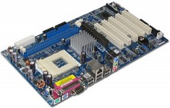
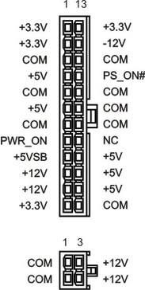

Fonte AT/ATX
AT é a sigla para Advanced Technology. Trata-se de um tipo de placa-mãe já antiga. Seu uso foi constante de 1983 até 1996 e o ATX (acrônimo para Advanced Technology Extended) é um padrão criado no ano de 1995 pela Intel,
abordando quatro grandes áreas de melhorias, maior facilidade de uso,
melhor apoio para os atuais e futuros dispositivos de entrada e saída,
melhor suporte para atuais e futuras tecnologias de processadores e
redução de custo do sistema.
O padrão ATX corrigiu vários problemas relativos a limitações de
seu padrão anterior, o AT, inúmeras revisões já foram feitas e
atualmente o padrão encontra-se na versão 2.2. Hoje em dia esse formato ainda é o mais usado nos computadores pessoais vendidos no mercado, mesmo com o lançamento do padrão BTX pela Intel em 2003, que seria considerado seu sucessor mas atualmente o desenvolvimento desse padrão está parado.
 Uma placa-mãe ATX |
Visão geral
Dentre todas as mudanças de padrão ocorridas em muitos anos, essa foi a primeira no que diz respeito a placa-mãe.
design, praticamente houve a rotação de uma placa-mãe Baby AT em noventa graus dentro do gabinete, proporcionando uma nova montagem e nova configuração para o suprimento de energia.
Das modificações ocorridas pode-se destacar:
- O processador foi deslocado para longe dos slots de expansão, aumentando o espaço para inserção de periféricos;
- Houve o acréscimo aos reguladores de tensão de 12 volts devido ao aumento do poder de processamento dos computadores atuais;
- Conectores seriais e paralelos fixados na placa mãe e localizados na retaguarda do gabinete, reduzindo a quantia de cabos;
- Conector de potência único e a prova de falhas;
- Maior organização dos componentes internos facilitando a ventilação;
Placa-mãe
A acessibilidade e facilidade de expansão e manutenção são grandes vantagens do padrão ATX. Para que isso se torne possível a placa-mãe
deve seguir recomendações definidas pelo padrão e delimitar seu tamanho
total entre 30,5 centímetros de largura por 24,4 centímetros de
profundidade.
Em seu painel traseiro está presente um amontoado de conectores para dispositivos de entrada/saída, ele deve conter o tamanho entre 158,75 milímetros de largura e 44,45 milímetros de altura. Conectores de teclado e mouse no formato PS/2, conector seriais e paralelos na maioria das vezes estão presentes nesse painel, mas também pode apresentar componentes onboard como placa de rede, placa de vídeo, placa de som, entradas USB e FireWire, todos ligados diretamente na placa-mãe, dispensando o uso de cabos.
Já para o processador, sua posição exata não é especificada, mas é recomendado que ele esteja localizado na parte traseira dos conectores de entrada/saída e para o lado direito do último slot de expansão, facilitando assim sua refrigeração e o acesso pelo usuário. Essa posição também facilita a instalação de placas de expansão, hoje o padrão ATX suporta até sete slots de expansão, que podem variar entre ISA, PCI-E, PCI, AGP, CNR, compartilhado ISA / PCI e compartilhado CNR / PCI. Também a direita do último slot de expansão devem se localizar os soquetes de memória, cuidando para que esteja suficientemente afastado borda da placa-mãe, para que facilite a limpeza e a atualização, podendo ser feita pelo próprio usuário.
Conectores de potência passaram a possuir formatos que impeçam a
colocação errada garantindo mais segurança na instalação. Não há uma
localização exata para eles, recomenda-se para conector de potência que
sua posição seja mais a direita entre o processador e a borda da placa-mãe,
cuidando o espaço ocupado pelos possíveis periféricos inseridos nas
baias do gabinete. Já o conector ATX12V deve estar localizado o mais
próximo possível do regulador de tensão, garantindo assim uma energia
mais limpa.
Para conectores entrada/saída de disquete, IDE, SCSI também não há uma localização exata ao longo da placa-mãe.
Como recomendações devem estar próximo da borda frontal da placa e para
o lado direito dos ‘’slots’’ de expansão. Essa localização deve visar à
redução e organização dos cabos a partir de seus conectores até seu
destino, as baias de periféricos.
Fonte de alimentação
Quanto à fonte de alimentação,
também houve melhoras significativas. A começar pelo conector principal
de alimentação, ao contrário do padrão AT, não é possível encaixar o
conector de forma invertida,e tudo copiado e colado, proporcionando
segurança na montagem.
O conector principal de alimentação da fonte do padrão AT possuía
12 pinos, já o conector do padrão ATX pode variar de 20 a 24 pinos.
Nessa nova versão de conector principal de alimentação foi incluída a
tensão de +3,3 V, eliminando a necessidade da placa-mãe derivar essa
tensão de outra potência. A tabela abaixo mostra a relação dos pinos e
sua respectiva tensão elétrica:
ATX - Conector principal de alimentação
24 Pinos( 20 pinos + 4 pinos(11,12 e 23,24) )
| Tensão | Pino | Cor | Cor | Pino | Tensão |
| +3.3 V | 1 | 13 | +3.3 V | ||
| +3.3 V | 2 | 14 | -12 V | ||
| Terra | 3 | 15 | Terra | ||
| +5 V | 4 | 16 | PS_ON | ||
| Terra | 5 | 17 | Terra | ||
| +5 V | 6 | 18 | Terra | ||
| Terra | 7 | 19 | Terra | ||
| Power OK | 8 | 20 | -5 V (Opcional) | ||
| +5 VSB | 9 | 21 | +5 V | ||
| +12 V | 10 | 22 | +5 V | ||
| +12 V | 11 | 23 | +5 V | ||
| +3.3 V | 12 | 24 | Terra |
 Conector ATX2.0 |
Cinco tipos de tensões são essências de uma fonte ATX:
- +5 V: utilizada na alimentação de chips, como processadores, chipsets e módulos de memória;
- -5 V: aplicada em dispositivos periféricos, como mouse e teclado;
- +12 V: usada em dispositivos que contenham motores, como HDs (cujo motor é responsável por girar os discos) e drives de CD ou DVD (que possui motores para abrir a gaveta e para girar o disco);
- -12 V: utilizada na alimentação de barramentos de comunicação, como o antigo ISA (Industry Standard Architecture).
- +3,3 V: usada por chips (principalmente pelo processador), reduzindo o consumo de energia.
A fonte do padrão ATX passou a oferecer o recurso de desligamento via software, pois conta com um sinal TTL (Transistor-Transistor Logic) chamado Power Supply On (PS_ON). Quando o computador está em uso a placa-mãe
mantêm um nível de tensão baixo para o PS_ON, já quando em desuso o
nível de tensão do PS_ON permanece alto. Esse sinal de ativação e
desativação pode partir de recursos como:
- Soft On/Off: ativação e desativação da fonte via software.
- Wake-on-LAN: ativação e desativação da fonte via placa de rede;
- Wake-on-Modem: ativação e desativação da fonte via placa de fax modem;
O sinal PS_ON depende da existência do sinal 5VSB (Standby).
Esse recurso proporciona o computador entrar em modo descanso, ou seja,
permite que determinados circuitos sejam alimentados quando as tensões
em corrente contínua estão suspensas, mantendo ativa apenas a tensão de 5
V. Com isso é possível o computador se manter ligado mesmo que a placa de vídeo ou o HD fiquem desativados.
O Power OK é um recurso já contido no padrão AT e presente no
padrão ATX. Esse recurso funciona como uma proteção, com a função de
comunicar se a fonte está funcionando corretamente, ou seja, operando
com tensões aceitáveis para o bom funcionamento e sem riscos de
danificar algum componente do computador. Caso esse sinal não exista ou
seja interrompido, o computador geralmente se desliga automaticamente.
Dependendo do tipo de processador utilizado, a fonte pode ter
outras configurações de conectores. Existem cinco versões modificadas do
padrão ATX de fonte, utilizados em tipos especiais de processadores,
que são:
- WTX: Conector principal de 24 pinos, utilizado pelos processadores Pentium II, Pentium III, Xeon e Athlon MP.
- AMD GES: Conector principal de 24 pinos, além de um conector secundário de 8 pinos, utilizados por alguns processadores Athlon de núcleo duplo.
- ATX12V: Conector principal de 20 pinos, além de um conector secundário de 4 pinos e um conector terciário de 8 pinos, utilizado por processadores Pentium 4, Athlon MP e Athlon 64.
- EPS12V: Conector principal de 24 pinos, além de conectores secundário e terciário de 8 pinos, utilizados por processadores Xeon e Opteron.
- ATX12V 2.0: Conector principal de 24 pinos, além de um conector secundário de 4 pinos, utilizado por processadores Pentium 4 e Athlon 64.